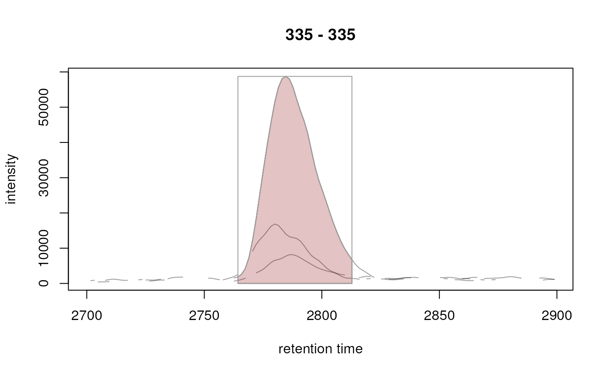

R/functions-XCMSnExp.R
highlightChromPeaks.RdThe highlightChromPeaks function adds chromatographic
peak definitions to an existing plot, such as one created by the
plot method on a Chromatogram or
MChromatograms object.
For highlightChromPeaks: XCMSnExp object with the
detected peaks.
For highlightChromPeaks: numeric(2) with the
retention time range from which peaks should be extracted and plotted.
numeric(2) with the mz range from which the peaks should
be extracted and plotted.
character defining the IDs (i.e. rownames of the peak
in the chromPeaks table) of the chromatographic peaks to be
highlighted in a plot.
colors to be used to color the border of the rectangles/peaks.
Has to be equal to the number of samples in x.
numeric(1) defining the width of the line/border.
For highlightChromPeaks: color to be used to fill the
rectangle (if type = "rect") or the peak
(for type = "polygon").
the plotting type. See plot in base grapics for
more details.
For highlightChromPeaks: character(1) defining how the peak
should be highlighted: type = "rect" draws a rectangle
representing the peak definition, type = "point" indicates a
chromatographic peak with a single point at the position of the peak's
"rt" and "maxo" and type = "polygon" will highlight
the peak shape. For type = "polygon" the color of the border and
area can be defined with parameters "border" and "col",
respectively.
character(1) specifying how peaks are called to be
located within the region defined by mz and rt. Can be
one of "any", "within", and "apex_within" for all
peaks that are even partially overlapping the region, peaks that are
completely within the region, and peaks for which the apex is within
the region. This parameter is passed to the type argument of the
chromPeaks function. See related documentation for more
information and examples.
additional parameters to the matplot or plot
function.
## Load a test data set with detected peaks
data(faahko_sub)
## Update the path to the files for the local system
dirname(faahko_sub) <- system.file("cdf/KO", package = "faahKO")
## Disable parallel processing for this example
register(SerialParam())
## Extract the ion chromatogram for one chromatographic peak in the data.
chrs <- chromatogram(faahko_sub, rt = c(2700, 2900), mz = 335)
plot(chrs)
## Extract chromatographic peaks for the mz/rt range (if any).
chromPeaks(faahko_sub, rt = c(2700, 2900), mz = 335)
#> mz mzmin mzmax rt rtmin rtmax into intb maxo sn sample
#> CP095 335 335 335 2786.199 2764.29 2812.803 1496244 1451652 58736 55 2
## Highlight the chromatographic peaks in the area
## Show the peak definition with a rectangle
highlightChromPeaks(faahko_sub, rt = c(2700, 2900), mz = 335)
## Color the actual peak
highlightChromPeaks(faahko_sub, rt = c(2700, 2900), mz = 335,
col = c("#ff000020", "#00ff0020"), type = "polygon")
